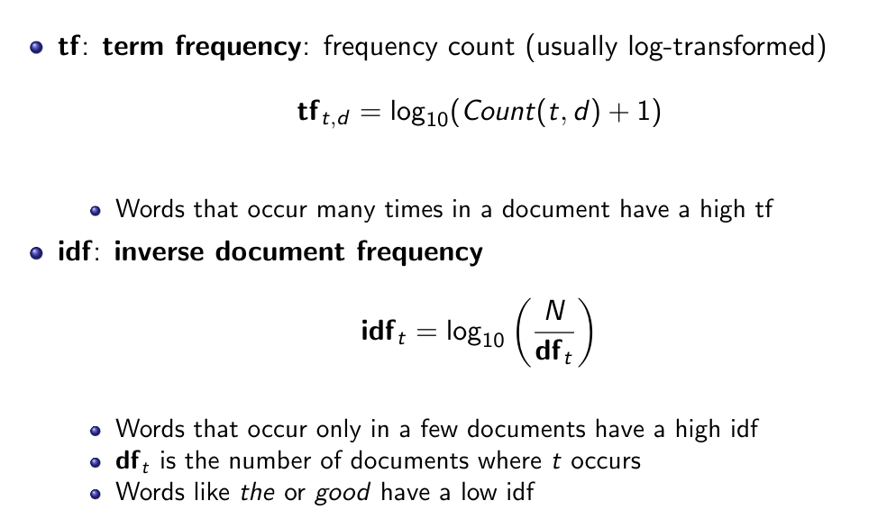

Word embedding
We transform each word into a vector, where similar words have similar vectors. There are two common models for word embedding:
- TF-IDF
- Word2Vec
TF-IDF
Co-occurrence matrix
A co-occurrence matrix represents how often two word co-occur. This way, similar words will be used in similar context, therefore, will have similar vectors. To compare two words, we can extrapolate their vector representation from the matrix, and we can use the dot product or the cosine between them.
Rewriting
Often, we have words that are much more frequent than others and this can make it difficult to get information from a co-occurrence matrix with very different frequency of words. To avoid this situation we can use rewriting: 
Positive pointwise mutual information
It is an alternative to tf-idf and can be computed as: Where: is the probability of co-occurrence while is the probability of random co-occurrence. PPMI is like PMI where we take the value of PMI only if positive, 0 otherwise.
Weighted PPMI
PPMI has a bias toward infrequent events. To solve this we can:
- use k-smoothing
- give rare words slightly higher probabilities:
Dense representation
Both PPMI and TF-IDF use a sparse representation where most of the value of the vector are 0. A Dense representation will, instead, have a more compact representation and no (or very few) 0 values.
Word2vec
The basic Idea behind all the dense representation is to use a very simple neural network to predict the next word in a given context and use the neural network representation as the vector. The word2vec model is trained for a binary classification task and uses logistic regression instead of MLP. The network need to predict the central word given as a context the words surrounding it. To transform this task to a binary one the network need to choose between the real result and a noise one created with a unigram .